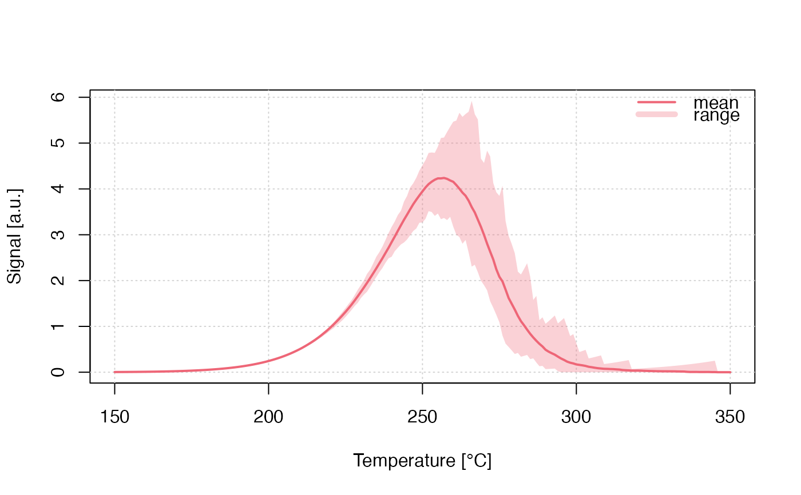
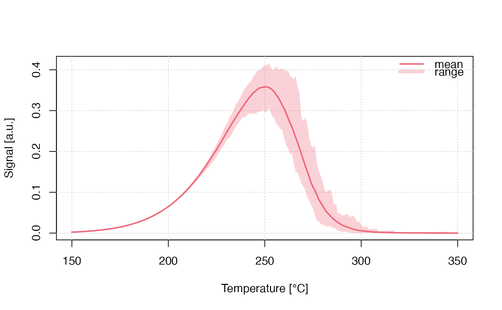

Visualise 'RLumCarlo' modelling results without extracting the values manually. Typically visualised are the averaged signal or the number of remaining electrons, with a polygon indicating modelling uncertainties.
plot_RLumCarlo( object, plot_value = "mean", plot_uncertainty = "range", FUN = NULL, norm = FALSE, add = FALSE, ... )
| object | list of class |
|---|---|
| plot_value | character (with default): type of curve value to be displayed.
Allowed are |
| plot_uncertainty | character (with default): type of the displayed uncertainty. Allowed
values are |
| FUN | function (optional): own function that can be applied to the y-values before normalisation and plotting |
| norm | logical (with default): normalise curve to the highest intensity value |
| add | logical (with default): allows overplotting of results by adding curves to
an existing plot. This argument is handled automatically if |
| ... | further argument, that can be passed to control the plot output largely
following the argument names in graphics::plot.default. Currently supported
are: |
This function returns a graphical output which is the visualisation of the modelling output.
For colouring the curves, the package khroma::khroma-package is used to provide colours that can be best distinguished, in particular by colour-blind users.
0.1.0
Sebastian Kreutzer, Geography & Earth Sciences, Aberystwyth University (United Kingdom)
Johannes Friedrich, University of Bayreuth (Germany)
Kreutzer, S., Friedrich, J., 2020. plot_RLumCarlo(): Plot RLumCarlo Monte-Carlo Simulation Results. Function version 0.1.0. In: Friedrich, J., Kreutzer, S., Pagonis, V., Schmidt, C., 2020. RLumCarlo: Monte-Carlo Methods for Simulating Luminescence Phenomena. R package version 0.1.7. https://CRAN.R-project.org/package=RLumCarlo
## plain plot DELOC <- run_MC_TL_DELOC( s = 3.5e12, E = 1.45, R = 0.1, method = 'seq', clusters = 100, times = 150:350) %T>% plot_RLumCarlo(legend = TRUE)## TL with FUN to correct for thermal ## quenching f <- function(x) x * 1/(1 + (2e+6 * exp(-0.55/(8.617e-5 * (DELOC$time + 273))))) plot_RLumCarlo( object = DELOC, FUN = f)